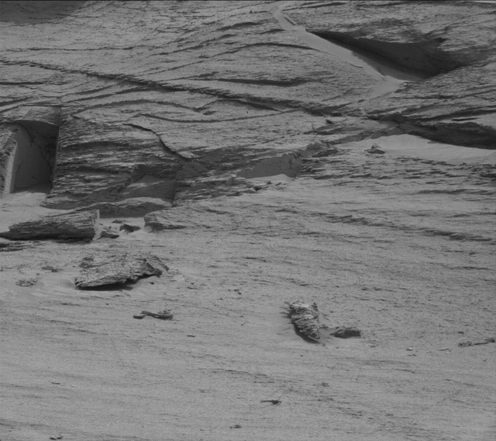
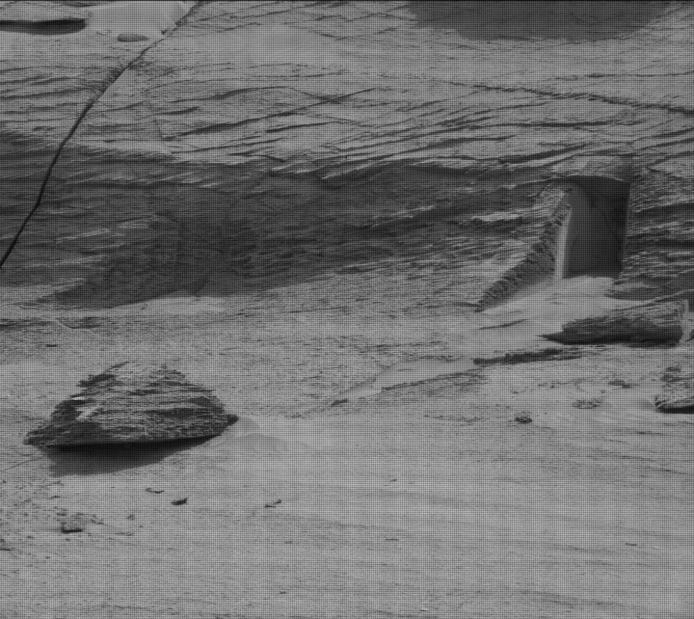
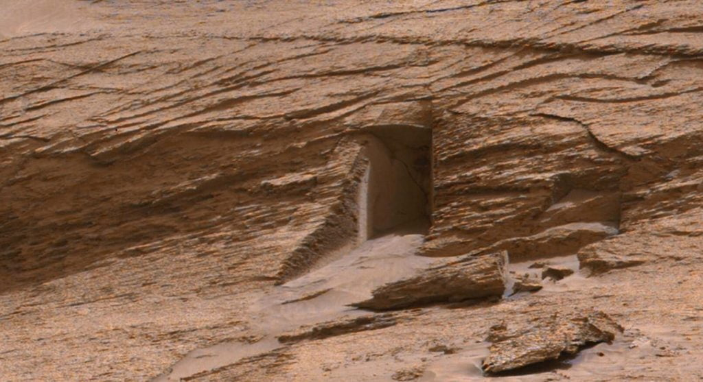
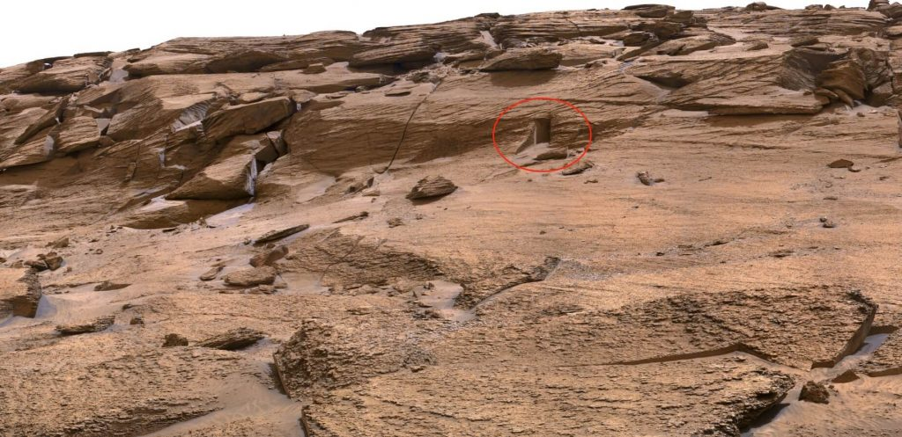

လွန်ခဲ့တဲ့ နှစ် ၂၀ လောက်က နက္ခတ် ပညာရှင် တစ်ယောက်ကို မားစ် ပေါ်မှာ သက်ရှိတွေ ရှိခဲ့နိုင်လား မေးရင် မရှိနိုင် ခဲ့ဘူး လို့ပဲ ဖြေဖို့ များပါတယ်။ ဒါပေမယ့် မားစ်ကို လွှတ်တင် ခဲ့တဲ့ သုတေသန ယာဉ် တွေကနေ ကောက်ယူ ရရှိခဲ့တဲ့ အချက်အလက် တွေအရ မားစ် ပေါ်မှာ တချိန်က သက်ရှိတွေ ရှိနေနိုင် ခဲ့တယ်လို့ ပညာရှင် အများအပြားက ယူဆ လာကြပါတယ်။
အခုဆို မားစ် ပေါ်မှာ ယခင် ရှေးခေတ် တချိန်က ပင်လယ်တွေ၊ မြစ်တွေ၊ ချောင်းတွေ၊ မြစ်ဝကျွန်းပေါ် တွေနဲ ရှိခဲ့တယ် ဆိုတာကို ပညာရှင် တွေ အကြား ငြင်းမရအောင် လက်ခံခဲ့ ကြပြီး ဖြစ်ပါတယ်။ ဒီ အချက် တွေကြောင့် ယခင် နှစ် သန်း ထောင်ဂဏန်း ကာလက မားစ် ပေါ်မှာ သက်ရှိတွေ ရှင်သန်နိုင်ခဲ့တဲ့ အခြေအနေ သဘာဝ ပတ်ဝန်းကျင် ရှိခဲ့မယ် လို့ ယူဆလာ ကြပြီး ဖြစ်ပါတယ်။
မားစ် ပေါ်ကို နာဆာက လွှတ်တင်ခဲ့တဲ့ အင်္ဂါဂြိုဟ် လေ့လာရေး ယာဉ်တွေ ဖြစ်တဲ့ Perseverance နဲ့ Curiosity Rover တို့လို ယာဉ်တွေကနေ ဓါတ်ပုံ အမြောက်အများ ရိုက်ကူး ပေးပို့ ခဲ့ပါတယ်။ ဒီ ဓါတ်ပုံ တွေကနေ ယခင် မသိခဲ့ ဘူးတဲ့ အင်္ဂါဂြိုဟ်နဲ့ သက်ဆိုင်တဲ့ အကြောင်း အရာ အချက် အလက် အသစ် အများအပြားကို ရရှိ လေ့လာ နိုင်ခဲ့ ကြပါတယ်။
ဥပမာ မားစ် ပေါ် ပျံသန်းတဲ့ လူမဲ့ ရဟတ်ယာဉ် ဖြစ်တဲ့ Ingenuity ကနေ အင်္ဂါဂြိုဟ်ရဲ့ မျက်နှာပြင် အပေါ်စီး မြင်ကွင်း အများ အပြား ပြန်လည် ပေးပို့ နိုင်ခဲ့ ပါတယ်။
မားစ် ရိုဗာ နှစ်စင်း ဖြစ်တဲ့ Perseverance နဲ့ Curiosity Rover နှစ်စင်း ကလဲ ဓါတ်ပုံ အများ အပြား ပြန်လည် ပေးပို့ ခဲ့ပါတယ်။ ဒီ အင်္ဂါဂြိုစ် မျက်နှာပြင် ဓါတ်ပုံတွေ ထဲမှာ မကြာ ခန ဆိုသလို ထူးဆန်းတဲ့ မြေမျက်နှာ သွင်ပြင်တွေ တွေ့ရ တတ်ပါတယ်။
မကြာ သေးမီ ကမှ မားစ်ရိုဗာ ကနေ ရိုက်ကူး ပေးပို့ လိုက်တဲ့ ဓါတ်ပုံ တွေမှာ မား ဂြိုဟ်ပေါ်က ကျောက်သား နံရံမှာ ဖေါက်ထား သလို ဖြစ်နေတဲ့ တံခါးပေါက် နဲ့ တူတဲ့ သွင်ပြင် တစ်ခုကို တွေ့ရှိခဲ့ ကြရပါတယ်။
ဒီ တံခါးပေါက်လို သွင်ပြင်ကို Facebook နဲ့ Twitter အသုံးပြုသူ အချို့က “မားစ်ဂြိုဟ်သို့ ဝင်ပေါက် (Entrance to Mars)” ဆိုပြီးတောင် အမည် ပေးထား ကြပါတယ်။
အချို့ကလဲ ဒါဟာ အင်္ဂါဂြိဟ်မှာ အသိဉာဏ် မြင့်မားတဲ့ သက်ရှိတွေ မှီတင်း နေထိုင် ခဲ့ဖူးတယ် ဆိုတာကို သက်သေ ပြနေတယ် လို့ ဆိုကြပါတယ်။
ဒီ ဓါတ်ပုံ တွေကို Curiosity Rover ကနေ ပြီးခဲ့တဲ့ မေလ ၇ ရက် နေ့ကမှ ရိုက်ကူး ထားခဲ့တာ ဖြစ်ပါတယ်။ ဒီ ဓါတ်ပုံ တွေကို နာဆာ ရဲ့ ဝက်ဘ်ဆိုဒ် မှာလဲ တင်ထား ပါတယ်။
ဒီ ဓါတ်ပုံမှာ ကျောက်သား နံရံမှာ တံခါးလို တိတိ ရိရိ ဖြစ်နေတဲ့ လေးထောင့်ပုံ အပေါက် တစ်ခုကို ထင်ထင် ရှားရှား တွေ့ကြရမှာ ဖြစ်ပါတယ်။ ဒီ လေးထောင် ပေါက်ရဲ့ ပုံစံ ကလဲ တစ်စုံ တစ်ယောက်က တူထား သလို တိတိရိရိ ညီညီ ညာညာ ဖြစ်နေပါတယ်။
မားစ် ဂြိုဟ်ရဲ့ မျက်နှာ ပြင်မှာ ဒီလို ထူးထူး ဆန်းဆန်း သွင်ပြင်တွေ တွေ့မြင်ရတာ ဒါဟာ ပထမ ဆုံး အကြိမ်တော့ မဟုတ်ပါဘူး။ ဒီလို ဖြစ်ရတာကို သိပ္ပံ ပညာရှင် တွေက pareidolia လို့ အမည် ပေးထား ပါတယ်။ pareidolia ဆိုတာက မသဲကွဲ တဲ့ သွင်ပြင် တွေကို အဓိပ္ပါယ် ရှိတဲ့၊ ရင်းနှီးတဲ့ အရာ ဝတ္ထု တွေ အနေနဲ့ မျက်စေ့က မြင်တာ မျိုးကို ပေးထားတဲ့ အမည် ဖြစ်ပါတယ်။
ဥပမာ ချွန်ချွန် ကျောက်တုံး တစ်ခု တွေ့ရင် ကိုယ် မြင်ဖူး နေကျ ပိရမစ် လို့ မြင်တာမျိုး၊ ရှည်မျောမျော အရာ ကို ဇွန်း လို့ မြင်တာမျိုး အစ ရှိသဖြင့်ပေါ့။
ဒီ တံခါးပုံ သွင်ပြင် ကို နာဆာက ထုတ်ဖေါ် ပြသ ခဲ့တဲ့ ဓါတ်ပုံ နှစ်ပုံမှာ ထင်ထင် ရှားရှား မြင်နိုင်မှာ ဖြစ်ပါတယ်။
ပထမ ပုံကတော့ ၂၀၂၂ မေလ ၅ ရက် က ရိုက်ကူး ထားတဲ့ ပုံအမှတ် Sol 3466 (2022-05-07T07:57:46.000Z) မှာ ဖြစ်ပါတယ်။ ဒီ ပုံရဲ့ ဘယ်ဖက်မှာ တံခါးလို ဖြစ်နေတဲ့ အပေါက် တစ်ခုကို ထင်ထင် ရှားရှား မြင်ကြရမှာ ဖြစ်ပါတယ်။ ဒီ ပုံဟာ ဂေးလ် ဥက္ကာတွင်း ကြီးရဲ့ နံရံ (Gale Crater) ကို ရိုက်ကူး ထားတဲ့ ပုံ ဖြစ်ပါတယ်။


ပညာရှင် တွေကတော့ ဒီ အချက်ကို လက်မခံ ကြပါဘူး။ အခု မြင်ရတာ ဟာ အပေါ်မှာ ပြောခဲ့ သလို အလင်းရဲ့ လှည့်စား မှု (optical illusion) ဖြစ်ဖို့ များတယ် လို့ ဆိုပါတယ်။ ဒါမှ မဟုတ်လဲ ကျောက်နံရံ တိုက်စား အက်ကွဲမှုကြောင့် သဘာဝ အတိုင်း ဖြစ်ပေါ်လာတဲ့ သွင်ပြင် တစ်ရပ်ကို အဲ့သည် အချိန် ကျရောက် နေတဲ့ အလင်းရောင် နဲ့ အရိပ်တွေ ကြောင့် တံခါးပေါက် သဏ္ဍာန် တွေ့မြင်ရခြင်း ဖြစ်နိုင်တယ်လို့ ယူဆ ကြပါတယ်။
ဘယ်လိုပဲ ဖြစ်ဖြစ် လက်ရှိမှာတော့ အင်တာနက် စာမျက်နှာ တွေမှာ ဒီကိစ္စနဲ့ ပါတ်သက်လို့ conspiracy theory အမျိုးမျိုး ပေါ်ထွက် ပျံနှံ့လျှက် ရှိနေ ကြောင်းပါ။

